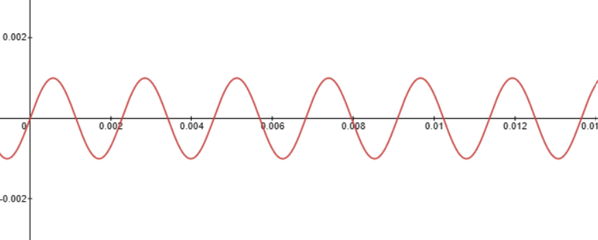
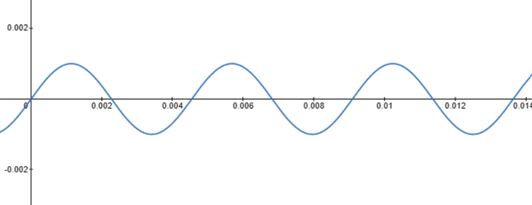
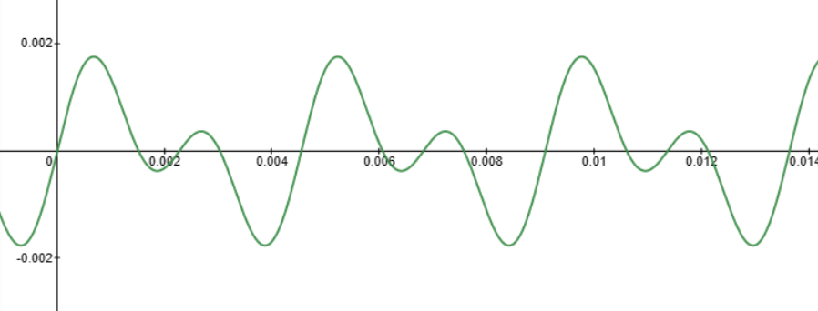
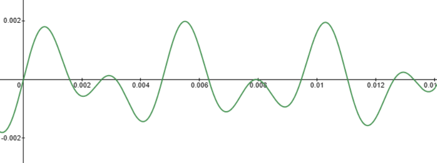
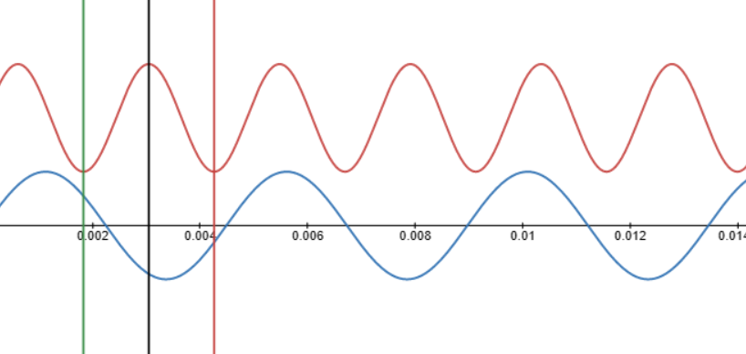
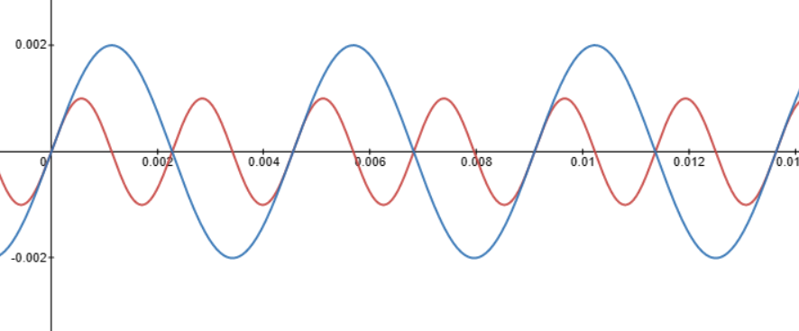

Teorie muzicală distilată
Profesorul (foarte nemulțumit și repetând definiția): Muzica iaște aceea care ne gâghilă urechile într-un mod plăcut... (pântre dinți, aparte, școlarului:) Ia sama doară să nu ți le gâghil eu ție într-un mod neplăcut! (Se aude clopotul de ieșire.)
Inspectorul (se ridică; copiii fac și ei ca inspectorul): Domnule profesore, sunt foarte mulțumit. Metoda dumitale e admirabilă...
~ Un pedagog de școală nouă (de Ion Luca Caragiale)
Atunci când aruncăm o piatră în apă, din punctul de contact se propagă o serie de valuri. În același fel funcționează și sunetul.
Existența unui sunet apare atunci când există o sursă (o vibrație puternică într-un punct din spațiu) și un mediu de propagare (în cazul nostru, aerul).
Cel mai simplu sunet pe care îl putem modela matematic este un sine wave (sinusoidă). El este doar o funcție matematică exprimată folosind trigonometria.
Așa cum ne așteptăm, o astfel de funcție arată întocmai ca niște valuri.

Matematica
O sinusoidă este o funcție matematică definită astfel:
$$y(t) = A \sin(\omega t + \varphi)$$
- t - timpul
- A - amplitudinea (cât de "tare" sună ~ volumul)
- frecvența unghiulară: $$ \omega = 2 \pi f $$
- unde f este frecvența obișnuită exprimată în hz (cicluri pe secundă)
- Faza este doar o variabilă care translatează pe stânga și pe dreapta sunetul (întârziere sau avantaj) față de t = 0. În exemplele noastre, faza va fi mereu 0. $$ \varphi = 0 $$
De exemplu, o notă LA în acordajul standard, prin convenție, este la o frecvență de 440hz.
$$ f = 440hz$$
Graficul sinusoidei asociat notei LA în acordajul standard arată cam așa:
O altă notă LA este la 220hz. Graficul ei arată asemănător:
După cum observați, există o relație evidentă între frecvență și felul în care auzim. O frecvență mai mare (440) face sunetul mai înalt (mai subțire), pe când una mai joasă scoate un sunet mai "gros".
Acordul
Două sau mai multe sunete cântate simultan reprezintă un acord
Matematic vorbind, un acord este o însumare de mai multe sinusoide.
De exemplu, cele două note "LA" cântate împreună arată așa:
Graficul sumei nu spune prea multe lucruri. Dar auzim că cele două note sună bine împreună (și se potrivesc)
Două note se potrivesc foarte bine dacă raportul frecvențelor lor este unul cât mai simplu. Acest lucru se datorează creierului nostru, căruia îi plac pattern-urile simple. Iată de exemplu două note frecvențe random cântate împreună (223, 411):
Putem spune cu ușurință că raportul dintre cele două frecvențe este unul urâțel. De aici și combinația celor două sunete.
Pentru a înțelege acest fenomen, iată graficul în care cele două frecvențe random sunt descompuse:
Liniile colorate reprezintă evenimentele sinusoidei de sus. După cum vedeți, nu există nicio concordanță între evenimentele de sus și cele de jos. Cele două funcții nu își găsesc "puncte comune" de eveniment.
În schimb, iată cum arată 440 cu 220 la un loc (ele având un raport de 2:1)
Le-am așezat una peste alta tocmai ca să puteți observa concordanța care există între cele două. Această periodicitate în muzică se numește "armonie" și ea poate fi obținută cântând mult mai multe note împreună.
Mai mult, nu doar raportul de 2:1 sună bine. Există și alte raporturi folosite în teoria muzicală care redau un sunet plăcut. Iată câteva exemple:
| 2:1 | Octava | |
| 3:2 | Cvinta | |
| 4:3 | Cvarta | |
| 5:3 | Terța majoră | |
| 6:5 | Terța minoră |
| Încearcă chiar tu | |
|---|---|
| hz | |
| hz | |
|
|
|
Mai multe despre asta:
- Video playlist ~ teorie muzicală distilată (Casey Connor 2019)
- Video playlist ~ introducere în fizica oscilatorie (Khan Academy 2017)
- Video ~ Pitagora, muzica și matematica (temperamente)